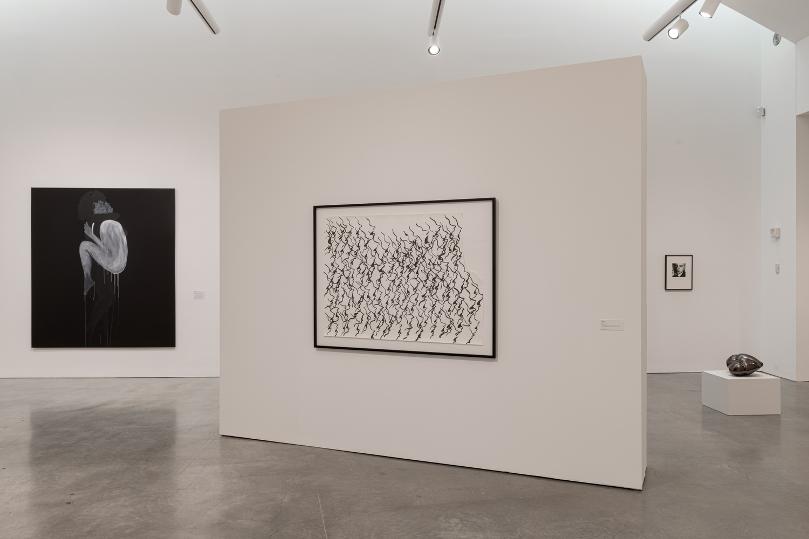
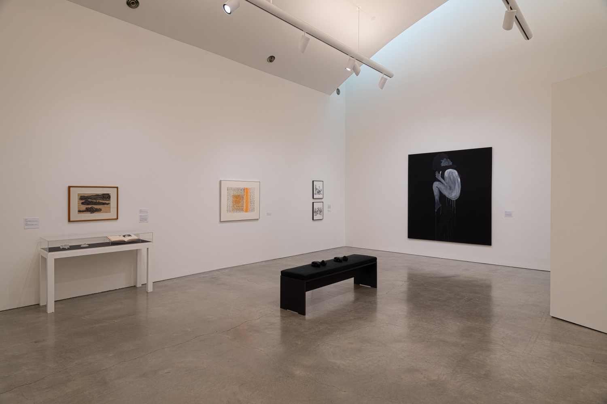
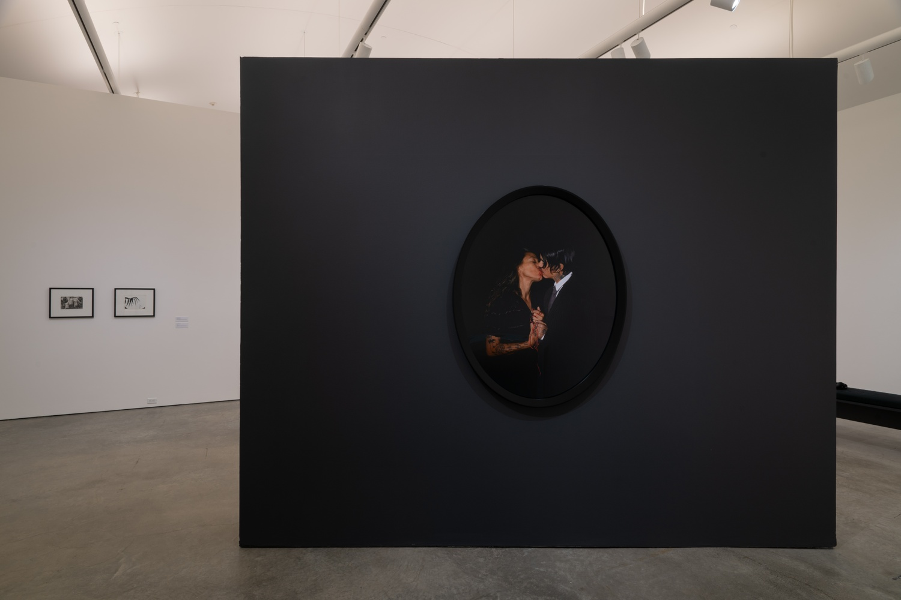

Throbbing_quivering_pulsing_beating
CCS Bard College, Co-curator
December 5 – December 15, 2019
CCS Bard College, Co-curator
December 5 – December 15, 2019
In her seminal text, The Body in Pain (1985), American theorist Elaine Scarry writes that bodily pain not only blocks language but actively destroys it. She refers to a medical questionnaire that helps patients articulate the affective, cognitive, and sensory dimensions of their pain, a vocabulary for what would otherwise be indescribable. Throbbing, quivering, pulsing, and beating are four words used in the survey to express how pain’s felt-experience can be understood to have rhythm. These embodied rhythmic sensations might manifest as pain, pleasure, or both. throbbing_quivering_pulsing_beating considers the work of fourteen contemporary artists to question what it means to bear witness to the ineffable.

image caption: photo courtesy of tk tk tk.
Selected from the Marieluise Hessel Collection, works by an international and intergenerational group of artists visualise the sensation patterns of pain and pleasure, foregrounding the abstracted, repeated, or dismembered body through sketches, snapshots, and fragments. This exhibition proposes tactical and poetic approaches to experiences that escape language.

image caption: photo courtesy of tk tk tk.

image caption: photo courtesy of tk tk tk.
Curated by: Natasha Matteson, Christine Nyce, Camila Palomino & Candice Strongwater.